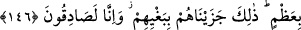

Akıllı insana gereken dünyada, peygamberler ve kâmil velîler gibi halkın en zahidi
olmak ve sebeplerden geçmektir.
Büyüklerden birisi demiştir ki: Bir fakir gördüm. Elinde bir kovayla çölde bir
kuyunun başına geldi. Kovayı kuyuya saldı. O arada ip koptu ve kova kuyuya düştü. Bir
müddet bekledikten sonra fakir: “İzzetine yemin olsun ki kovam olmadan yahût bana izin
vermeden buradan ayrılmam.” dedi. Gördüm ki susuz bir ceylân koşarak kuyunun başına
geldi ve kuyunun içine baktı. Bunun üzerine kuyudaki su ağzına kadar dolup taştı.
Yükselen su ile fakirin kovası da kuyunun ağzına kadar geldi. Fakir kovasını aldı ve
ağlayarak şöyle dedi: “Allah’ım senin yanında bir geyik kadar olamadım.” Bunun
üzerine gaibden şöyle bir nida işitildi: “Ey miskin, sen kova ve iple geldin. Ceylan ise
bize tevekkülünden sebeplerden geçerek geldi.”
Bu hikaye, Allah’dan başkasından tamamıyla alakayı kesmek gerektiğine delalet
etmektedir.
146. Yahudilere bütün tırnaklı hayvanları haram kıldık. Sırtlarında yahut
bağırsaklarında taşıdıkları ya da kemiğe karışan yağlar hariç olmak üzere sığır ve
koyunun iç yağlarını da onlara haram kıldık. Bu, zulümleri yüzünden onlara
verdiğimiz cezâdır. Biz elbette doğru söyleyeniz.
Onlardan öncekilere ve sonrakilere değil, özellikle “yahudilere” ister köpek ve kedi
gibi tırnaklarının arası açık yırtıcı hayvanlar, isterse tırnaklarının arası açık olmayan
deve, koyun, keçi, kaz ve ördek gibi “bütün tırnaklı hayvanları haram kıldık.”
Önceden onlara bazı tırnaklı hayvanlar helâl idi. Ancak Yahudiler zulmedince haramlık
hükmü bütün tırnaklıları kapsayacak şekilde genişletildi.
“Sığır ve koyunun da iç yağlarını onlara haram kıldık.” Onların etleri haram
kılınmamıştır. Helal olarak bırakılmıştır. İç yağından maksat, karın çevresindeki ve
böbreklerdeki yağdır. “Yalnız” bunların “sırtlarının yahut bağırsaklarının taşıdığı ya
da kemiğe karışan yağlarını haram etmedik.”
Yani bu hayvanların sırtında, yanlarında, kürek kemiklerinde ve butlarında gerek etin
içinde ve gerekse etin üstünde oluşan yağlar haram kılınmamıştır. Kemiğe karışan
yağdan maksat, kuyruk yağıdır. Kuyruğun kemikle karışması, kuyruğun içindeki “acbüz-
zeneb” denilen kemik vâsıtasıyla olmaktadır. İlk yaratılan ve son çürüyecek olan
kemiğin bu olduğu söylenmiştir.
“Azgınlıklarının” zulümleri, yani peygamberleri haksız yere öldürmeleri, faiz